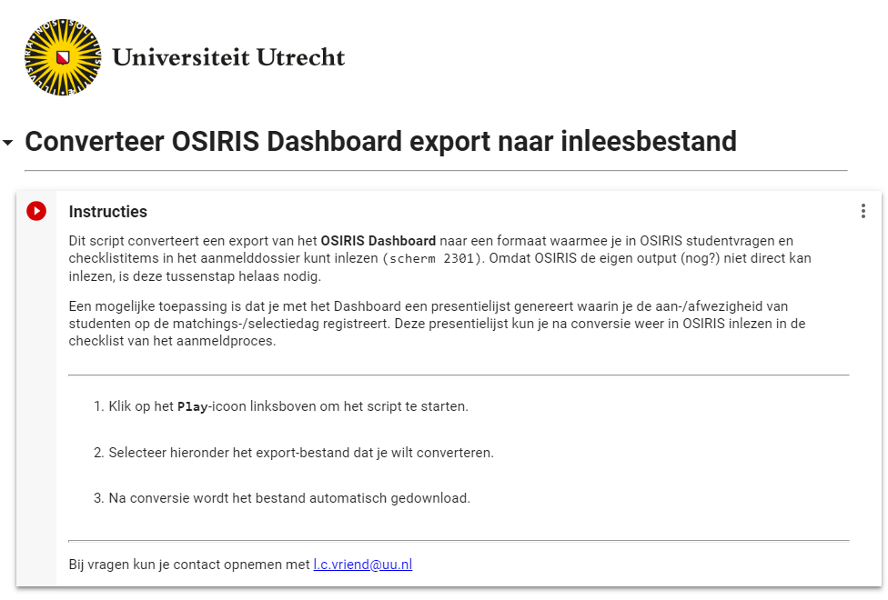
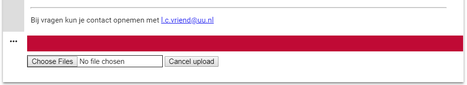

Converteren presentielijst
Hier staat hoe je de presentielijst (zoals deze in de instructie Maken presentielijst is aangemaakt) na de matchingsactiviteit klaarmaakt zodat je deze in kunt lezen.
De presentielijst bevat de volgende kolommen:
- Student nummer
- Naam student
- Proces
- Croho
- Opleiding
- NA_ACTIVITEIT-SKC_DATUM: Na matchingsactiviteit - Datum matchingsactiviteit
- NA_ACTIVITEIT-SKC_RESULTAAT: Na matchingsactiviteit - Resultaat matchingsactiviteit
De laatste twee kolommen zijn nog leeg. In de eerste kolom vul je voor alle studenten de datum waarop de matchingsactiviteit heeft plaatsgevonden in. De tweede kolom bevat de aanwezigheid/afwezigheid, en deze moet als volgt geregistreerd worden:
- Aanwezig =
P- Afwezig =
NDSla het bestand op nadat je de presentielijst volledig en correct hebt ingevuld. OSIRIS kan de eigen Dashboard export helaas niet lezen. Daarom is nu nog een conversie nodig. Ga naar deze pagina en log in (via de blauwe
Sign inknop rechtsboven) met de volgende gegevens:
- gebruikersnaam: matching.csa
- wachtwoord: op te vragen bij matching.csa@uu.nl
Vervolgens kom je op de pagina met het script:

Klik op het [
Play]-icoon linksboven het blok (naast de tekst Instructies) om het script te starten.
Vervolgens verschijnt (na enige momenten) onderin de volgende balk:

Klik op
Choose Files, selecteer het te converteren excel bestand en klik opOpen.
Vervolgens wordt het bestand automatisch geconverteerd en gedownload:
- bestandsnaam = 'geconverteerd_export_dashboard_[datum_van_vandaag].xlsx'
De gegevens die je uploadt, worden verder niet opgeslagen op de server van Google.
Het gedownloade bestand kun je gebruiken bij Inlezen presentielijst.